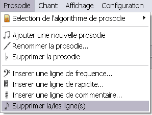

Pour supprimer une ou plusieurs insertions dans une prosodie, il faut d'abord sélectionner la ou les lignes d'insertion (de fréquence, rapidité, ou commentaire). Puis, il faut cliquer sur Prosodie > Supprimer la/les ligne(s)...

Le logiciel supprimera alors toutes les lignes d'insertion sélectionnées